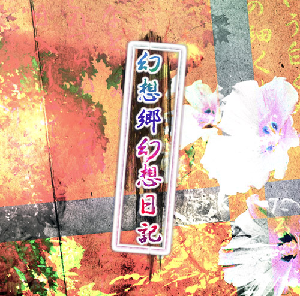

上海アリス幻樂団
http://www16.big.or.jp/~zun/

1000回遊べなきゃローグライクじゃねえ！
いつものように門番をしていた美鈴にある日突然訪れた不思議な出来事。
「幻想郷がダンジョンになってしまった！？」
レミリアの命でダンジョンに潜ることになった美鈴。
名を知る妖怪や人間の幻影が闊歩するダンジョンの奥底に眠る真実とは…？
| OS | Windows Vista / 7 / 8 で動作確認 |
| DirectX | 9.0c以上 |
| ビデオカード | DirectX9.0cをサポートするビデオカード |
| サウンドカード | Direct Soundが動作するもの |
| 入力機器 |
キーボードもしくはゲームパッド(8ボタン以上) ※4ボタン以上の同時押しを認識するものを推奨 |
| 企画 | 白mac |
| ゲームデザイン |
白mac KGM 霊屋 倭 |
| プログラム | 白mac |
| プログラム協力 |
spk 霊屋 倭 |
| シナリオ原案 | 白mac |
| シナリオ | KGM |
| 演出 |
KGM 白mac |
| ダンジョンデザイン | 霊屋 倭 |
| ボスバトルデザイン |
まやん 白mac |
| バランス調整 |
霊屋 倭 まやん |
| グラフィック |
白mac overx |
| グラフィック/ 外部スタッフ様 |
みらんこ 様【PixivID:80904】→Pixiv きいろからー 様 ツキシロ 様【PixivID:681148】→Pixiv しらじす 様【HP:Dream upper】http://www.geocities.jp/capt_syu/ 槍騎ランナイ 様【ブログ:馬上の一本槍】http://d.hatena.ne.jp/Lankni/ はるやん 様 ししゃも 様 風音みこと 様 |
| エフェクトデザイン |
白mac 霊屋 倭 まやん |
| 音楽 | KGM |
| 効果音 |
山可祢 白mac 霊屋 倭 |
| パッケージデザイン | 山可祢 |
| マニュアル |
overx KGM 白mac |
ザ・マッチメイカァズ2ndhttp://osabisi.sakura.ne.jp/m2/ cgtextures.comhttp://www.cgtextures.com/Music with Myuuhttp://www.ne.jp/asahi/music/myuu/ |
上海アリス幻樂団http://www16.big.or.jp/~zun/ |